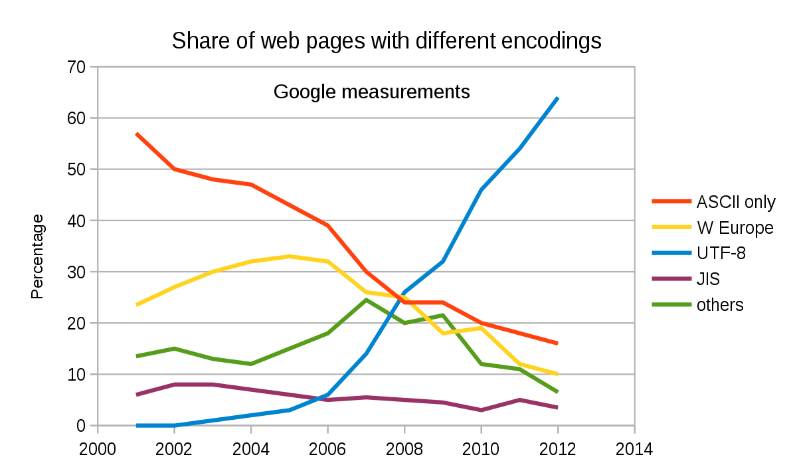

Teiknsetter i ein datamaskin avgjer korleis bokstavane i alfabetet, tal og andre skriftteikn skal visast på skjermen. Som for bilde gjeld det å bryte ned ting til 0 og 1. Derfor har kvar enkelt bokstav og kvart tal og teikn sitt binære tal. Windows laga etterkvart eit eige teiknsett som dei kalla ANSI. Dei utvida då teiknsettet til 8 bit slik dei mellom anna fekk med bokstavane Æ, Ø og Å. Idag bruker datamaskiner teiknsettet Unicode, som har 8 bit og derfor 256 teikn. UTF-8 står for Unicode Transformation 8-bit og er eit Unicode-teiknsett som kan vise alle ulike teikn frå mange språk.

Bit og byte
Aukar du til fleire bit som du skal finne talet til, doblar du berre den verdien som kvar bit har. I 1 byte er det 8 bit. Med 8 bit får me 2 opphøgd i 8, altså 256 moglege val. Og dei 256 vala som ein byte gjer, er då eit tal som ofte er stort nok til å beskrive ein farge eller eit lydnivå eller til å oppgi eit teikn i eit teiknsett.